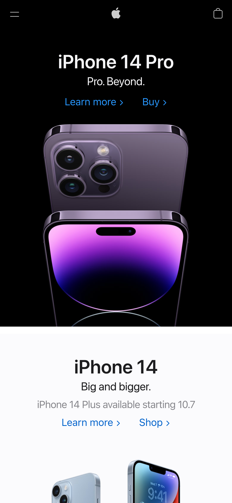
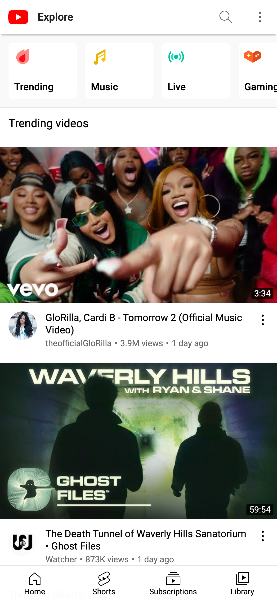

Clean design and White Space
Apple Apple's homepage has clean and focused design around the new iPhone 14. It is simple with minimal text and a large image that captures the attention. Then under the photo is white space with a but more text to not dostract from the phone. This style also matches Apple's reputation as a brand.
Rule of Thirds
Youtube Youtube's Homepage is a good example of the rule of thirds. Each Video card takes up around one third of your screen keeping things simple and focused on the video without being overwhelmed. This desing choice gives the user limited choices. To watch one of the 3 videos or to scroll further. Doing so will encourage the users to spend more time on the site.
Hick's Law
Jersey MikesJeresy Mike's homepage is a great example of Hick's Law. There are a few options which leave the customer less time to over think their order and less likley to go to another food provider.